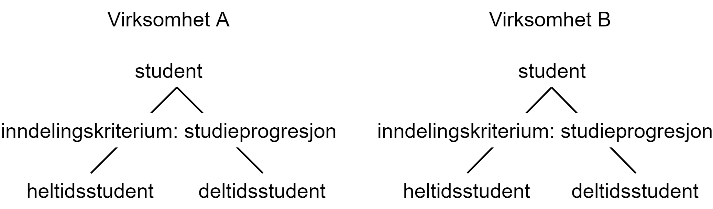

Forord
Referansekatalogen er en oversikt over obligatoriske og anbefalte IT-standarder i forvaltningen. Obligatoriske standarder skal følges av alle virksomheter. Anbefalte standarder skal følges dersom virksomhetene ikke har en god grunn til å la være å følge dem.
Referansekatalogen skal sikre at innbyggere og næringsliv får tilgang til offentlig informasjon og tjenester på en standardisert måte (uavhengig av brukerutstyr). Den skal også sikre god samhandling mellom offentlige virksomheter, hindre bindinger til bestemte leverandører og sikre god konkurranse i IT-markedet. Katalogen forvaltes av Digitaliseringsdirektoratet.
IT-ministeren satte i 2006 ned et bredt sammensatt Standardiseringsråd, som fra 2019 endret sitt navn til Arkitektur- og standardiseringsråd, med medlemmer fra kommunal og statlig sektor. Digitaliseringsdirektoratet får råd fra dette rådet om hvilke standarder som bør være anbefalte eller obligatoriske. Forslag til obligatoriske standarder blir først utredet av Digitaliseringsdirektoratet og deretter oversendt til Kommunal- og moderniseringsdepartementet etter høring. Revidert Forskrift om IT-standarder i offentlig forvaltning med nye obligatoriske standarder legges så fram for Kongen i statsråd som vedtar forskriftsendringer. Digitaliseringsdirektoratet beslutter hva som skal være anbefalte standarder i Referansekatalogen, etter utredning og høring i henhold til Arkitektur- og standardiseringsrådets arbeidsmetodikk.
Denne forvaltningsstandarden er utarbeidet av en arbeidsgruppe som er ledet av Språkrådet, i henhold til Arkitektur- og standardiseringsrådets arbeidsmetodikk. Den erstatter den første versjonen fra februar 2013. Standarden inngår i bruksområdet «Begrepsanalyse og definisjonsarbeid» i Referansekatalogen. Vedlegg D inneholder de viktigste endringene som er tatt inn etter den første versjonen av standarden.
Formål, omfang og avgrensinger
Dette kapitlet er ikke-normativt.
Bakgrunn
Utveksling og gjenbruk av data og brukertjenester på tvers av virksomheter forutsetter en felles forståelse av begrepene. Utilsiktede eller unødvendige forskjeller mellom begrepsforståelse og begrepsbruk kan føre til at samme informasjon innhentes flere ganger eller at informasjonen i verste fall brukes feil. Opprydding i begrepsbruk internt i en virksomhet er også en viktig del av informasjonsforvaltningsarbeidet i virksomheten. Begreper bør derfor harmoniseres ved at utilsiktede eller unødvendige forskjeller fjernes eller reduseres, eller differensieres ved at forskjellene som ikke kan fjernes eller reduseres, blir gjort tydelige.
Eksempler på behov for å harmonisere eller differensiere begreper:
-
En offentlig virksomhet skal utvikle en ny digital løsning. Virksomheten ønsker å gjenbruke data som de fra Felles datakatalog ser at en annen offentlig virksomhet allerede har innhentet. Imidlertid oppdager de i Felles begrepskatalog at begrepene som benyttes i datagrunnlaget, er ulike i de to virksomhetene. Man står derfor i fare for å feiltolke dataene, og den nye løsningen vil føre til hodebry, ikke effektivitet. Virksomhetene trenger et felles begrepsapparat.
-
To avdelinger i en virksomhet bruker samme fagterm om ulike begreper på nettsidene og i interne rutinedokumenter. Det skaper misforståelser både blant ansatte og publikum. Virksomheten trenger å tydeliggjøre forskjellene mellom begrepene ved f.eks. å bruke ulike termer for å unngå slike misforståelser.
Det som virksomhetene i ovennevnte eksempler også trenger, er felles verktøy og metoder for begrepsharmonisering og begrepsdifferensiering.
Formål
Standarden skal bidra til en felles ramme for begrepsarbeid og bruk av termer i offentlig forvaltning. Standarden skal også bidra til konsistent språkbruk i virksomhetenes kommunikasjon med publikum.
Standarden beskriver en prosess for å avklare likheter og ulikheter i innholdet i sentrale begreper og termer, med formål å harmonisere eller differensiere dem.
Målgruppe
Standarden er først og fremst tiltenkt offentlig forvaltning, men den vil være nyttig for alle organisasjoner og virksomheter som arbeider med begreper og termer i forbindelse med informasjonsforvaltning, datadeling, klarspråk og kommunikasjon med publikum.
Standarden forutsetter grunnleggende kunnskap i begrepsarbeid og terminologi. Mer informasjon finner du i Referansekatalogen og på Språkrådets nettsider. Språkrådet er nasjonalt samordningsorgan for terminologiutvikling og bistår med kompetanse i begrepsarbeid og terminologi.
Avgrensninger
Utgangspunktet for denne standarden er at begrepene som skal harmoniseres eller differensieres, er definerte. Som hjelp har vi i standardens informative del (vedlegg C) beskrevet forarbeid som bør gjennomføres før denne standarden skal tas i bruk.
Normative referanser
Følgende referanser er normative og danner grunnlag for denne standarden:
-
Termlosen: en forvaltningsstandard som gir en kort innføring i begrepsanalyse og terminologiarbeid.
-
ISO 1087:2019 Terminology work and terminology science — Vocabulary: internasjonal standard som definerer sentrale begreper i terminologi- og begrepsarbeid.
-
ISO 860:2007 Terminology work — Harmonization of concepts and terms: internasjonal standard for begrepsharmonisering.
-
Forvaltningsstandard for begrepsbeskrivelser: norsk forvaltningsstandard for beskrivelse av begreper.
Termer og definisjoner
Dette kapitlet inneholder definisjon av noen av de sentrale begrepene som er brukt i prosessmodellen i denne standarden. Andre begreper som er brukt, kan du finne i termbasen Snorre, fra Standard Norge.
Notasjon som er brukt: Anbefalt term er ført opp i fet skrift, eventuell tillatt term i vanlig skrift og rett under anbefalt term, før definisjonen.
begrepskoordinering
- begrepskoordinering
-
terminologiarbeid som omfatter begrepsharmonisering og begrepsdifferensiering
Kilde til definisjon: egendefinert
begrepsharmonisering
- begrepsharmonisering
-
terminologiarbeid med formål å etablere en sammenheng mellom to eller flere nært beslektede eller overlappende begreper for å fjerne eller redusere mindre ulikheter mellom dem
Kilde til definisjon: ISO 1087:2019 3.5.4 concept harmonization
Merknad: Gjennom begrepsharmoniseringen skaper vi en felles definisjon og felles term for der det opprinnelig var to eller flere ulike definisjoner og/eller to eller flere ulike termer. Mindre ulikheter som gjenstår, f.eks. uvesentlige kjennetegn, kan reduseres ved at de flyttes til et merknadsfelt, slik at definisjonen er helt like.
begrepsdifferensiering
- begrepsdifferensiering
-
terminologiarbeid med formål å tydeliggjøre forskjeller mellom nært beslektede eller overlappende begreper som ikke kan harmoniseres
Kilde til definisjon: egendefinert
Merknad: Forskjeller mellom begrepene kan tydeliggjøres i definisjoner, termer, merknader til definisjoner, fagområde og bruksområde.
Prosessmodell for harmonisering eller differensiering av begreper
Denne standarden beskriver en prosessmodell for harmonisering eller differensiering av begreper.
Standarden forutsetter at omfanget er avgrenset og begrepene er definert og beskrevet i henhold til Forvaltningsstandard for begrepsbeskrivelser. Dersom ikke det er gjort, bør dere gå til forarbeid (vedlegg C, ikke-normativt).
Dette kapitlet beskriver hva dere skal oppnå med de ulike stegene. Dere finner utdypende beskrivelser av hvordan dere gjennomfører hvert steg i vedlegg A (ikke-normativt).
Steg 1: Sammenstilling av begreper
Målet er å finne likheter og forskjeller mellom begrepene ved å sammenstille begrepene som skal harmoniseres eller differensieres.
Steg 2: Valg mellom begrepsharmonisering eller begrepsdifferensiering
Målet er å velge et realistisk mål for et koordineringsarbeid, som er:
-
å harmonisere begrepene (begrepsharmonisering)
-
å differensiere begrepene (begrepsdifferensiering)
-
å konkludere at verken begrepsharmonisering eller begrepsdifferensiering er aktuelt
I et sett av begreper kan utfallet bli at noen av begrepene blir harmonisert, mens andre blir differensiert.
Steg 3: Begrepsharmonisering
Målet er å komme fram til et eller flere felles begreper som alle involverte skal bruke, inkludert felles term.
Vedlegg A (ikke-normativt) - utdypende beskrivelse av stegene i prosessmodell
I dette vedlegget utdypes stegene i prosessmodellen (figur 1) i den normative delen av standarden.
Steg 1: Sammenstilling av begreper
Hvorfor
For å identifisere likhetene og ulikhetene mellom begrepene som skal harmoniseres eller differensieres, slik at det blir lettere å ta et realistisk valg i neste steg.
Forslag til framgangsmåte
-
Deltakerne presenterer termene og definisjonene som skal harmoniseres eller differensieres, for hverandre.
-
Deltakerne sjekker andre kilder for å se om det finnes andre relevante termer eller definisjoner som er i bruk.
-
Dersom begrepene har relasjon til hverandre, tegner deltakerne hver for seg sine egne begrepsdiagrammer. De vurderer også å tegne begrepsdiagrammer fra supplerende kilder om det er mulig.
-
Ved hierarkiske relasjoner er det viktig å ta med inndelingskriterium.
-
Ved assosiative relasjoner er det viktig å ta med en relasjonsbeskrivelse, dvs. hvilken assosiativ relasjon et begrep har til et annet begrep, f.eks. prosess > resultat (saksbehandling > vedtak).
-
-
Deltakerne stiller opp termene og definisjonene med kilder ved siden av hverandre som utgangspunkt for neste steg.
-
Dersom definisjonene inneholder ulike kjennetegn, er det viktig å identifisere hvilke kjennetegn som er vesentlige og hvilke som er uvesentlige eller supplerende.
-
-
Deltakerne identifiserer likheter og ulikheter ved å analysere i hvilken grad begrepene er overlappende, spesielt med tanke på:
-
begrepsrelasjoner
-
plassering i eventuelle begrepsdiagram
-
-
begrepsdefinisjoner
-
vesentlige kjennetegn
-
-
termer
-
både anbefalte termer og tillatte termer
-
-
Tips
- Punkt 2
-
Nyttige kilder til definisjoner og termer: Lovdata, Felles begrepskatalog, Store norske leksikon, Termbasen Snorre, Termportalen og Utenriksdepartementets EU-base (sistnevnte krever pålogging: brukernavn: guest passord: guest). Bokmålsordboka, Nynorskordboka og Det Norske Akademis Ordbok finnes også, men disse inneholder hovedsakelig begreper fra allmennspråket.
Det finnes også en rekke sektorspesifikke kilder. En oversikt finnes på Språkrådets nettsider.
Det finnes også internasjonale kilder, f.eks. EUs termbase IATE og ISO Online Browsing Platform (OBP) eller sektorspesifikke baser som f.eks. Electropedia for elektroteknikk og EMN Glossary for migrasjon.
- Punkt 3
-
Dere kan bruke et vanlig hvitt ark eller et program til å tegne begrepsdiagram. Termlosen gir en innføring i begrepsdiagram og inndelingskriterium.
- Punkt 4
-
Se også her Termlosen.
Steg 2: Valg mellom begrepsharmonisering og begrepsdifferensiering
Hvorfor
For å foreta et realistisk valg ved å utrede mulighetene for begrepsharmonisering eller begrepsdifferensiering.
Forslag til framgangsmåte
Deltakerne foretar terminologiske og administrative vurderinger ved bl.a. å svare på noen spørsmål, og foretar et realistisk valg for det videre arbeidet.
Jo flere spørsmål knyttet til punkt 1 (under) som blir besvart med “i stor grad”, jo bedre er forutsetningene for begrepsharmonisering.
Jo flere spørsmål knyttet til punkt 1 (under) som blir besvart med “i liten grad”, jo dårligere er forutsetningene for begrepsharmonisering.
-
Følgende spørsmål kan danne grunnlaget for terminologiske vurderinger:
-
I hvilken grad tilhører begrepene det samme fagområdet eller overlappende fagområder?
-
I hvilken grad er begrepene overlappende (analysert i steg 1)
-
I hvilken grad overlapper de vesentlige kjennetegnene i definisjonene hverandre (identifisert i steg 1)?
-
-
I hvilken grad er termene identiske (analysert i steg 1)?
-
Dersom virksomhetene har tegnet opp begrepsdiagrammer (i steg 1):
-
I hvilken grad overlapper begrepsdiagrammene hverandre?
-
I hvilken grad er inndelingskriteriene (ved begreper med hierarkiske begrepsrelasjoner) eller relasjonsbeskrivelsene (ved begreper med assosiative begrepsrelasjoner) identiske eller overlappende?
-
-
-
Følgende spørsmål kan danne grunnlaget for administrative vurderinger:
-
I hvilken grad får begrepsendringer økonomiske konsekvenser?
-
I hvilken grad får begrepsendringer administrative konsekvenser?
-
Dersom begrepene har opphav i regelverk (f.eks. lover og forskrifter), offentlige dokumenter eller standarder:
-
I hvilken grad er de involverte virksomhetene bundet av begrepsbruken i disse regelverkene og standardene?
-
I hvilken grad kan de involverte virksomhetene påvirke regelverkene og andre offentlige dokumenter innenfor en gitt tidsramme? Er det planlagt lov- og forskriftsarbeid eller arbeid med andre offentlige dokumenter av betydning?
-
I hvilken grad kan de involverte virksomhetene påvirke standarder innenfor en gitt tidsramme? Er det planlagt nye eller reviderte standarder?
-
-
I hvilken grad har de involverte virksomhetene tilgang til terminologisk kompetanse til å harmonisere eller differensiere begrepene?
-
I hvilken grad har de involverte virksomhetene tilgang til faglig kompetanse til å harmonisere eller differensiere begrepene?
-
I hvilken grad har de involverte virksomhetene myndighet til å harmonisere eller differensiere begrepene?
-
-
Realistisk valg:
I noen tilfeller vil er det etter vurderingene i punkt 1 og 2 ikke være hensiktsmessig å sette i gang et arbeid med å harmonisere eller differensiere. Det er likevel viktig å dokumentere vurderingene.
Utfallet av vurderingene av hvert enkelt begrep er ett av følgende alternativer for det videre arbeidet:
-
Begrepsharmonisering: steg 3
-
Begrepsdifferensiering: steg 4
-
Verken begrepsharmonisering eller begrepsdifferensiering: slutt
Når det dreier seg om et sett av begreper, kan utfallet være en kombinasjon av alternativene. Noen av begrepene kan harmoniseres, mens andre kan differensieres eller avsluttes uten noe resultat.
-
Tips
- Punkt 2
-
For statlige virksomheter finnes Utredningsinstruksen som gir føringer for analyse av administrative og økonomiske konsekvenser.
- Punkt 3
-
Nyttige kilder for å undersøke eventuelle planlagte lovendringer eller nye stortingsmeldinger og NOU-er: Lovdata.no, Stortinget.no og Regjeringen.no.
Relevante nettsider for å undersøke eventuelle endringer av standarder: Referansekatalogen, Standard.no, Nek.no og Nkom.no. Det samme gjelder nettsider til internasjonale organisasjoner som den europeiske standardiseringsorganisasjonen CEN og den internasjonale standardiseringsorganisasjoen ISO.
Stoppes arbeidet (alternativ C) fordi begrepene har opphav i lover eller forskrifter, bør deltakerne ta kontakt med ansvarlig departement for å informere om kartleggingen de har gjort, resultatet av den og nytten av å endre lov eller forskrift. Da kan det være mulig å ta hensyn til begrepene ved neste revisjon av den aktuelle loven eller forskriften.
Har begrepene opphav i standarder, bør deltakerne ta kontakt med ansvarlig organ for standarden eller standardene (f.eks. Sekretariatet for Arkitektur- og standardiseringsrådet, Standard Norge, Norsk Elektroteknisk Komité (NEK) eller Nasjonal Kommunikasjonsmyndighet (Nkom)) for å informere om kartleggingen de har gjort, resultatet av den og nytten av å endre standarden eller utvikle ny standard.
Steg 3: Begrepsharmonisering
Forslag til framgangsmåte
-
Deltakerne vurderer først om noen av de eksisterende definisjonene og termene kan gjenbrukes basert på noen faglige vurderinger:
-
Er noen av definisjonene og termene mer faglig korrekte enn andre?
-
Er noen av definisjonene og termene mer autoritative enn andre?
-
Er noen av definisjonene og termene fastsatte i lover, forskrifter eller standarder?
-
-
Er noen av definisjonene og termene mer i bruk enn andre?
-
Er noen av definisjonene og termene mer i tråd med terminologiske prinsipper enn andre?
-
-
Deltakerne foretar en avveining basert på svarene til punkt 1.
-
Deltakerne tegner et begrepsdiagram dersom begrepene har relasjoner til hverandre. Det er viktig å ta med eksisterende begreper som skal gjenbrukes, i tillegg til nye begreper.
-
Deltakerne utformer definisjoner og fastsette termer for nye, felles begreper.
-
Deltakerne registrerer og tilgjengeliggjør begrepene som virksomhetene blir enige om å harmonisere i en termbase, f.eks. Felles begrepskatalog eller Termportalen.
Tips
- Punkt 3 og 4
-
Det finnes en metode for terminologisk arbeid, se Termlosen.
Om deltakerne blir enige om nye, felles begreper som avviker fra standarder, bør begrepsansvarlig (se steg 5) tar kontakt med ansvarlig organ (f.eks. Sekretariatet for Arkitektur- og standardiseringsrådet, Standard Norge, Norsk Elektroteknisk Komité (NEK) eller Nasjonal Kommunikasjonsmyndighet (Nkom)) for å informere om kartleggingen de har gjort, resultatet av den og nytten av endre standarden. Da kan det være mulig å ta hensyn til de nye, felles begrepene ved neste revisjon av den aktuelle standarden.
Steg 4: Begrepsdifferensiering
Hvorfor
For å tydeliggjøre forskjeller mellom begrepene slik at de ikke brukes eller forståes som om de var identiske.
Forslag til framgangsmåte
Forskjeller i begrepene kan bli tydeliggjort på en eller flere av følgende måter:
-
Endring i en definisjon:
-
Ved å endre ordlyden i definisjonene slik at forskjellene blir tydelige.
-
-
Endring i term:
-
Ved å lage en helt ny term for et eller flere av begrepene
-
Ved å legge til et ordledd til en eller flere av termene, f.eks. godtgjørelse > reisegodtgjørelse
-
Ved å legge til et ord eller en ordgruppe til en eller flere av termene, f.eks. gjennomføringsgrad > gjennomføringsgrad per startkull
-
-
Tydeliggjøring i en merknad til definisjonen.
-
Bruk av feltene ‘fagområde’ eller ‘bruksområde’ i den valgte termbasen for å tydeliggjøre ulikhetene.
-
Henvisning mellom de berørte begrepene ved hjelp av relasjoner.
Steg 5: Enighet om forvaltningsmodell
Forslag til framgangsmåte
-
Ved begrepsharmonisering: Deltakerne blir enige om hvem som skal være ansvarlig for forvaltning av de harmoniserte begrepene. Dersom flere er ansvarlige for ulike deler av begrepssystemet, er det hensiktsmessig å utpeke en hovedansvarlig for det totale begrepssystemet.
-
Ved både begrepsharmonisering og begrepsdifferensiering: Deltakerne blir enige om varslingsrutiner ved eventuelle endringer eller behov for begrepsendringer.
Vedlegg B (ikke-normativt) - eksempler
Oversikt over eksempler
I dette vedlegget finner du noen eksempler som viser hvordan standarden kan brukes. Selv om det er to virksomheter involvert i alle eksemplene, kan situasjonene som beskrives, gjerne være mellom flere enn to virksomheter, eller mellom to eller flere enheter i samme virksomhet.
Eksemplene baserer seg på nasjonale virksomheter, men framgangsmåtene kunne også gjelde mellom nasjonale og internasjonale virksomheter.
I det første eksemplet (‘kulturminne’) møter du to virksomheter som ønsker å harmonisere ett begrep. De gjør dette ved at den ene virksomheten tilpasser seg og bruker den andre virksomhetens termer og definisjoner.
I det andre eksemplet ('avløpsvann'/'kloakk') møter du virksomheter som ønsker å harmonisere to ulike sett av begreper. Det gjør de ved at de lager et nytt, felles begrepssystem som gir grunnlag for felles definisjoner og termer.
I det tredje eksemplet (‘gjennomføringsgrad’) møter du to virksomheter som ønsker å harmonisere ett begrep som de har definert ulikt. Det viser seg å ikke være mulig å harmonisere begrepet, og de ender opp med to differensierte begreper.
I det fjerde eksemplet (‘heltidsstudent’) møter du to virksomheter som ønsker å harmonisere ett begrep som de har definert ulikt. De finner ut at de må inkludere et sideordnet begrep i arbeidet. Harmoniseringsarbeidet viser seg å være urealistisk, og de ender opp med to sett av differensierte begreper.
Eksempler på begrepsharmonisering
Eksempel: ett harmonisert begrep som resultat
Hensikt: Eksemplet illustrerer hvordan to virksomheter harmoniserer begreper ved at den ene bruker den andres definisjon og term.
Utgangspunkt: Kommune A ønsker å bruke begrepet ‘kulturminne’ i samsvar med andre, relevante virksomheter.
Er omfanget avgrenset og begrepene definerte? Ja, omfanget er avgrenset til kun begrepet ‘kulturminne’, og begrepet er definert, men de ulike virksomhetene har definert begrepet ulikt.
Steg 1: Sammenstilling av begreper
Kommune A finner at begrepet også er definert i kulturminneloven. Loven forvaltes av virksomhet B, som blir invitert til et møte.
Steg 1.1 Virksomhetene møtes og presenterer termene og definisjonene som skal harmoniseres eller differensieres.
Kommune A:
term |
kulturminne |
definisjon |
eldre spor av mennesker |
kilde |
egendefinert |
Virksomhet B:
term |
kulturminne |
definisjon |
alle spor etter menneskelig virksomhet i vårt fysiske miljø, herunder lokaliteter det knytter seg historiske hendelser, tro eller tradisjon til |
kilde |
Lov om kulturminner |
Steg 1.2 Virksomhetene undersøker andre kilder (Store norske leksikon, ordbøker, Felles begrepskatalog, Termportalen og termbasen Snorre) og finner en definisjon fra Store norske leksikon:
term |
kulturminne |
definisjon |
konkrete, som regel synbare, spor etter eldre tiders liv og virke |
kilde |
Store norske leksikon |
Steg 1.3 Begrepsdiagrammer: uaktuelt fordi det er snakk om ett begrep.
Steg 1.4 Virksomhetene stiller opp termene og definisjonene med kilder ved siden av hverandre:
kommune A |
virksomhet B |
Store norske leksikon |
|
term |
kulturminne |
kulturminne |
kulturminne (synonym: fornminne) |
definisjon |
eldre spor av mennesker |
alle spor etter menneskelig virksomhet i vårt fysiske miljø, herunder lokaliteter det knytter seg historiske hendelser, tro eller tradisjon til |
konkrete, som regel synbare, spor etter eldre tiders liv og virke |
Steg 1.5 Virksomhetene identifiserer likheter og ulikheter:
Begrepsdefinisjon:
Alle definisjonene tar utgangspunkt i det felles overbegrepet ‘spor’. I tillegg blir det i kommune As og virksomhet Bs definisjon eksplisitt uttrykt at begrepet omfatter spor av mennesker, mens det i Store norske leksikon ikke er like tydelig. Imidlertid kan ordet virke i Store norske leksikons artikkel antyde den samme avgrensingen.
Det som skiller definisjonen fra hverandre, er tidsangivelsen. Kommune As og Store norske leksikons definisjon peker på ‘eldre spor’, mens virksomhet B ikke gjør en slik avgrensing i sin definisjon.
Termer:
Termene er identiske, men Store norske leksikon fører i tillegg opp synonymet fornminne.
Steg 2: Valg mellom begrepsharmonisering eller begrepsdifferensiering
Virksomhetene gjør en vurdering av mulighetene for begrepsharmonisering og begrepsdifferensiering i et felles dokument. De vurderer ut fra følgende moment:
Steg 2.1 Terminologiske vurderinger
-
Begrepene tilhører det samme fagområdet
-
De vesentlige kjennetegnene er nokså like, men med et vesentlig avvik: tidsangivelsen
-
Termene er identiske
Basert på terminologiske vurderinger er det gode muligheter for harmonisering av begrepene.
Steg 2.2 Administrative vurderinger
-
Virksomhets Bs definisjon er fastsatt i lov og vil derfor være svært vanskelig og kostnadskrevende å endre. Det foreligger ingen planer om revisjon av den aktuelle loven.
-
Begge virksomhetene har tilgang til faglig og terminologisk kompetanse.
-
Kommune A har myndighet til uformelt og uten formkrav å endre sin egen definisjon.
-
Begge virksomhetene uttrykker et sterkt ønske om å harmonisere for at loven skal håndheves riktig.
Basert på administrative og økonomiske vurderinger er det gode muligheter for harmonisering av begrepene.
Steg 2.3 Konklusjon
Begrepene kan harmoniseres.
Steg 3: Begrepsharmonisering
Kommune A og virksomhet B blir enige om at begge bruker virksomhet Bs definisjon fordi det er den mest autoritative og er i tråd med allmenn faglig forståelse av begrepet.
Virksomhet B tar kontakt med Store norske leksikon for å informere om avviket fra definisjonen i leksikonoppslaget.
Steg 4: Begrepsdifferensiering, uaktuelt
Steg 5: Enighet om forvaltningsmodell
Virksomhet B og kommune A blir enige om at virksomhet B fortsatt er den ansvarlige for å forvalte begrepet og forplikter seg til å informere kommune A om de planlegger å endre begrepet.
Slutt: Begrepene er harmoniserte.
Eksempel: et sett av harmoniserte begreper som resultat
Hensikt: Eksemplet illustrerer hvordan to virksomheter samarbeider om to ulike sett begreper, som blir harmonisert ved å etablere et nytt, felles begrepssystem.
Utgangspunkt: To offentlige virksomheter som arbeider innen miljøområdet, virksomhet A og virksomhet B, ønsker å harmonisere delvis overlappende begrepssystemer for avløpsvann for å etablere en felles rapporteringsordning.
Er omfanget avgrenset og begrepene definerte? Ja, virksomhetene har avgrenset omfanget til type avløpsvann, og begrepene er allerede definerte.
Steg 1: Sammenstilling av begreper
Steg 1.1 Virksomhetene møtes og presenterer termene og definisjonene som skal harmoniseres eller differensieres.
Virksomhet A
term |
definisjon |
kilde |
avløpsvann |
vann som slippes ut fra husholdninger |
egendefinert |
gråvann |
avløpsvann fra husholdningers bad og dusjer, håndvasker og kjøkkenkummer |
egendefinert |
svartvann |
avløpsvann fra husholdningers toaletter |
egendefinert |
Virksomhet B
term |
definisjon |
kilde |
kloakk |
vann som slippes ut fra husholdninger eller i en industriprosess samt vann som ledes bort fra tak på bygninger, fra overflate av anlegg eller terreng |
NS-EN 1085:1997: Rensing av avløpsvann - Ordliste |
spillvann |
brukt vann som slippes ut etter bruk i husholdninger, industri og næringsbygg |
egendefinert |
overvann |
vann fra naturlig nedbør som ikke har blitt forurenset ved bruk |
egendefinert |
Steg 1.2 Virksomhetene sjekker andre kilder for relevante termer og definisjoner: Lovdata, termbasen Snorre, Store norske leksikon, Felles begrepskatalog og Termportalen.
I termbasen Snorre finner virksomhetene følgende definisjoner som virksomhetene ønsker å ta med seg videre i arbeidet:
term |
definisjon |
kilde |
avløpsvann |
vann som slippes ut fra husholdninger eller i en industriprosess samt vann som ledes bort fra tak på bygninger, fra overflate av anlegg eller terreng |
NS-EN 1085:1997: Rensing av avløpsvann - Ordliste |
spillvann |
brukt vann som hovedsakelig slippes ut fra vannklosett, dusj, badekar, bidé, håndvask, utslagsvask og gulvsluk |
NS-EN 12056-5:2000: Avløpssystemer med selvfall i bygninger |
overvann |
vann fra naturlig nedbør som ikke har blitt forurenset ved bruk |
NS-EN 12056-5:2000: Avløpssystemer med selvfall i bygninger |
gråvann |
spillvann som ikke inneholder fekale stoffer eller urin |
NS-EN 12056-2:2000: Avløpssystemer med selvfall i bygninger |
svartvann |
avløpsvann som inneholder fekale stoffer eller urin |
NS-EN 12056-2:2000: Avløpssystemer med selvfall i bygninger |
Steg 1.3 Ettersom begrepene har relasjon til hverandre, tegner virksomhetene hvert sitt begrepsdiagram basert på en inndeling (inndelingskriterium) fra hvor vannet kommer fra, dvs. vannets opphav.
Virksomhetene tegner ikke opp begrepsdiagram basert på de to tekniske standardene siden definisjonene i for liten grad uttrykker begrepsrelasjonene. De velger likevel å ta med seg definisjonene videre i arbeidet.
Steg 1.4 Virksomhetene stiller opp termene, definisjonene med kilder ved siden av hverandre:
virksomhet A |
virksomhet B |
Standardene NS-EN 1085:1997 og NS-EN 12056-5:2000 |
avløpsvann: vann som slippes ut fra husholdninger |
kloakk (synonym: avløpsvann): vann som slippes ut fra husholdninger eller i en industriprosess samt vann som ledes bort fra tak på bygninger, fra overflate av anlegg eller terreng |
avløpsvann: vann som slippes ut fra husholdninger eller i en industriprosess samt vann som ledes bort fra tak på bygninger, fra overflate av anlegg eller terreng |
gråvann: avløpsvann fra husholdningers bad og dusjer, håndvasker og kjøkkenkummer |
gråvann: spillvann som ikke inneholder fekale stoffer eller urin |
|
svartvann: avløpsvann fra husholdningers toaletter |
svartvann: avløpsvann som inneholder fekale stoffer eller urin |
|
spillvann: brukt vann som slippes ut etter bruk i husholdninger, industri og næringsbygg |
spillvann: brukt vann som hovedsakelig slippes ut fra vannklosett, dusj, badekar, bidé, håndvask, utslagsvask og gulvsluk |
|
overvann: vann som ledes bort fra tak på bygninger, fra overflaten av anlegg eller terreng |
overvann: vann fra naturlig nedbør som ikke har blitt forurenset ved bruk |
Steg 1.5 Virksomhetene identifiserer likheter og ulikheter:
Begrepsrelasjoner:
Begge diagrammene har et overbegrep med to underbegreper inndelt etter samme inndelingskriterium. Underbegrepene er ulike i de to begrepssystemene.
I standardene antydes det at ‘gråvann’ er et underbegrep av ‘spillvann’ mens ‘svartvann’ er et underbegrep til ‘avløpsvann, samtidig som de er sidebegreper.
Begrepsdefinisjoner:
Overbegrepet i de to diagrammene er nokså overlappende. Definisjonen til virksomhet As overbegrep er noe snevrere (vann fra husholdninger) enn virksomhet Bs (vann fra husholdninger, industriprosess og overflatevann). Virksomhet Bs definisjon er mer i samsvar med standardene på fagområdet.
Definisjonene til underbegrepene antyder at begrepsparet ‘gråvann’ og ‘svartvann’ ikke overlapper begrepsparet ‘spillvann’ og ‘overvann’, men er svært relaterte siden de bygger på samme inndelingskriterium (opphav).
Definisjonene fra standardene antyder at de vesentlige kjennetegnene til ‘gråvann’ og ‘svartvann’ er vannets innhold, og at de dermed er underordnet ‘spillvann’, som bygger på det vesentlige kjennetegnet opphav.
Termer: Virksomhet A bruker termen avløpsvann for overbegrepet, mens virksomhet B bruker termen kloakk. _Imidlertid benytter virksomhet B seg også av synonymet _avløpsvann.
Steg 2: Valg mellom begrepsharmonisering eller begrepsdifferensiering
Virksomhetene gjør en vurdering av mulighetene for begrepsharmonisering og begrepsdifferensiering i et felles dokument. De vurderer ut fra følgende moment:
Steg 2.1 Terminologiske vurderinger
-
Begrepssystemene er innen samme fagområde.
-
Begrepssystemene er delvis overlappende.
-
Begrepssystemene bruker samme inndelingskriterium: ‘opphav’.
-
Termene til overbegrepet er delvis like.
Steg 2.2 Administrative vurderinger
-
Det er et sterkt behov om et felles begrepsapparat i den nye felles rapporteringsordningen fra begge virksomhetene.
-
Eventuelle endringer av begrepsdefinisjoner innebærer ikke endringer i lover eller forskrifter, men vil kunne avvike fra standardene på området (se ovenfor).
-
Eventuelle endringer vil få konsekvenser for eksisterende datasystemer, men nytten er langt høyere enn kostnaden. Virksomhetene ser kostnadene som overkommelige.
-
Begge virksomhetene har tilgang til faglig og terminologisk kompetanse.
Steg 2.3 Konklusjon
Virksomhetene velger å sette i gang et arbeid med å harmonisere begrepene.
Steg 3: Begrepsharmonisering
Virksomhetene ønsker å etablere et nytt, felles begrepssystem som inneholder begrepene fra virksomhetene og fra NS-EN 1085:1997.
Virksomhetene tegner et nytt felles begrepsdiagram på følgende måte:
Først etableres et felles overbegrep (‘avløpsvann’) ved at virksomhet A aksepterer at begrepsinnholdet få et større omfang ved å omfatte ‘avløpsvann fra industri samt vann som ledes bort fra tak på bygninger, fra overflate av anlegg eller terreng’, slik virksomhet B og standarden definerer begrepet.
Virksomhet B aksepterer at termen kloakk blir erstattet med termen avløpsvann.
Begrepene ‘spillvann’ og ‘overvann’ blir fastsatt som underbegreper til ‘avløpsvann’ ved å ta utganspunkt i inndelingskriteriet vannets opphav.
Begrepene ‘gråvann’ og ‘svartvann’ blir fastsatt som underbegreper til ‘spillvann’ ved å ta utgangspunkt i inndelingskriteriet vannets innhold for å tydeliggjøre forskjellene mellom begrepene.
Virksomheten tegner opp et nytt, felles begrepsdiagram:
Med utgangspunkt i det nye, felles begrepssystemet blir virksomhet A og virksomhet B enige om følgende termer og definisjoner:
anbefalt term |
definisjon |
merknad |
avløpsvann |
vann som slippes ut fra husholdninger eller i en industriprosess samt vann som ledes bort fra tak på bygninger, fra overflate av anlegg eller terreng |
Definisjonen er i samsvar med standarden. |
spillvann |
avløpsvann som slippes ut fra husholdninger, industri og næringsbygg |
Definisjonen skiller seg fra standarden ved at den inneholder en tydeligere relasjon til overbegrepet, og at kjennetegnet er mer allment. |
overvann |
avløpsvann fra naturlig nedbør som ikke har blitt forurenset ved bruk |
Definisjonen skiller seg fra standarden ved at den inneholder en tydeligere relasjon til overbegrepet. |
svartvann |
avløpsvann som inneholder fekale stoffer eller urin |
Definisjonen er i samsvar med standarden. |
gråvann |
avløpsvann som ikke inneholder fekale stoffer eller urin |
Definisjonen skiller seg fra standarden ved at den inneholder en tydeligere relasjon til overbegrepet. |
Virksomhetene melder fra til ansvarlige komiteer for standardene om de nye definisjonene og avvik fra standardenes definisjoner som de er blitt enige om og vil praktisere i samsvar med.
Steg 4: Begrepsdifferensiering, uaktuelt.
Steg 5: Enighet om forvaltningsmodell
Virksomhetene blir enige om at Virksomhet B får ansvaret for å forvalte det nye, felles begrepssystemet. Virksomhet B registrerer begrepene i Felles begrepskatalog og forplikter seg til å ta kontakt med virksomhet A ved eventuelle, framtidige begrepsendringer.
Slutt: Begrepene er harmoniserte.
Eksempler på begrepsdifferensiering
Eksempel: to differensierte begreper som resultat
Hensikt: Eksemplet illustrerer hvordan to virksomheter samarbeider rundt to tilsynelatende like begreper som ikke er mulig å harmonisere, og som til slutt blir differensiert.
Utgangspunkt: To virksomheter, virksomhet A og virksomhet B, bruker i sin årsstatistikk begrepet ‘gjennomføringsgrad’, som har en noe ulik definisjon.
Er omfanget avgrenset og begrepene definerte? Ja, virksomhetene ønsker bare å se på begrepet ‘gjennomføringsgrad’. Virksomhetene har også definert begrepene på forhånd.
Steg 1: Sammenstilling av begreper
Steg 1.1 Virksomhetene møtes og presenterer termene og definisjonene som skal harmoniseres eller differensieres.
Virksomhet A:
term |
gjennomføringsgrad |
definisjon |
andel av studenter som fullfører studiet innen normert tid |
kilde |
egendefinert |
Virksomhet B:
term |
gjennomføringsgrad |
definisjon |
andel av et startkull som fullfører studiet innen normert tid |
kilde |
egendefinert |
Steg 1.2 Virksomhetene sjekker andre kilder for relevante termer eller definisjoner: Lovdata, Store norske leksikon, Felles begrepskatalog, UHRs termbase, nettsider i UH-sektoren, Termportalen, ordbøker (Bokmålsordboka, Nynorskordboka, NAOB).
Virksomhetene finner ingen andre definisjoner av ‘gjennomføringsgrad’.
Steg 1.3 Begrepsdiagrammer: uaktuelt, fordi det er snakk om ett begrep.
Steg 1.4 Virksomhetene stiller opp termene og definisjonene med kilder ved siden av hverandre:
For å kunne sammenligne mer presist, finner virksomhet A det nødvendig å presisere sin definisjon ved hjelp av en tilføyet presisering i parentes:
virksomhet A |
virksomhet B |
|
term |
gjennomføringsgrad |
gjennomføringsgrad |
definisjon |
andel av studenter som fullfører studiet (per år, på tvers av alle startkull) innen normert tid |
andel av et startkull som fullfører studiet innen normert tid |
Steg 1.5 Virksomhetene identifiserer likheter og ulikheter:
Begrepsdefinisjoner:
Virksomhetene benytter kjennetegn som viser til to forskjellige kategorier: 1) forholdstall mellom de som begynner og de som fullfører innen normert tid, av alle startkull og 2) forholdstall mellom de som begynner og de som fullfører innen normert tid, av et gitt startkull.
Termer:
Termene er identiske.
Steg 2: Valg mellom begrepsharmonisering eller begrepsdifferensiering
Virksomhetene gjør en vurdering av mulighetene for begrepsharmonisering og begrepsdifferensiering i et felles dokument. De vurderer ut fra følgende moment:
Steg 2.1 Terminologiske vurderinger
-
Begrepene tilhører det samme fagområdet, men bruksområde og formål er ulikt.
-
Kjennetegnene i definisjonene er delvis ulike, se steg 1.5.
Basert på terminologiske vurderinger er det ikke gode muligheter for å harmonisere begrepene.
Steg 2.2 Administrative vurderinger
-
Virksomhetene trenger å rapportere to ulike datasett til ulike formål.
-
Virksomhetene har utredet og kommet fram til at de kan justere på termene og ordlyden i definisjonen innenfor de økonomiske og administrative rammene.
-
Virksomhetene har utøvende myndighet på området og kan derfor gjøre slike justeringer.
Steg 2.3 Konklusjon
Begrepene kan ikke harmoniseres. Begrepene differensieres ved at forskjellene i begrepsdefinisjoner tydeliggjøres og at termene gjenspeiler forskjellene.
Steg 3: Begrepsharmonisering: uaktuelt.
Steg 4: Begrepsdifferensiering
Begrepene fra de to virksomhetene blir ført opp i samme termbase: Felles begrepskatalog.
Steg 4.1 Endring i definisjon: Begge virksomhetene justerer ordlyden uten at de innebærer endringer i begrepsinnholdet, se under.
Steg 4.2. Endring i term: Virksomhet B legger til et ledd i termen som tydeliggjør forskjellen fra virksomhet As begrep:
virksomhet A |
virksomhet B |
|
term |
gjennomføringsgrad |
gjennomføringsgrad per startkull |
definisjon |
andel av studenter av alle startkull som fullfører studiet innen normert tid |
andel av studenter av et gitt startkull som fullfører studiet innen normert tid |
Steg 4.3 Virksomhetene vurderer at det ikke er nødvendig å legge til informasjon i merknadsfeltet i termbasen de benytter.
Steg 4.4 Virksomhetene vurderer at det ikke er nødvendig å bruke ‘fagområde’ eller ‘bruksområde’ for å skille mellom begrepene i termbasen de benytter.
Steg 4.5 Det blir lagt inn en se også-relasjon mellom begrepene i Felles begrepskatalog.
Steg 5: Enighet om forvaltningsmodell
Virksomhetene forplikter seg til å varsle hverandre når de ønsker å endre hvert sitt begrep.
Eksempel: ønske om å harmonisere to tilsynelatende like begreper som resulterer i to sett av differensierte begreper
Hensikt: Eksemplet illustrerer hvordan to virksomheter samarbeider rundt to tilsynelatende like begreper som ikke er mulig å harmonisere, og som til slutt blir differensiert. Eksemplet illustrerer også at selv når utgangspunktet er et begrepspar, kan det være andre begreper som blir berørt.
Utgangspunkt: To virksomheter, virksomhet A og virksomhet B, bruker begge begrepet ‘heltidsstudent’ men med noe ulik definisjon. De gir ulike data til statistikk over tall på ulike kategorier studenter. Virksomhetene ønsker å harmonisere begrepene dersom det er mulig.
Er omfanget avgrenset og begrepene definerte? Ja, virksomhetene ønsker bare å se på begrepet ‘heltidsstudent’. Virksomhetene har også definert begrepene på forhånd.
Steg 1: Sammenstilling av begreper
Steg 1.1 Virksomhetene møtes og presenterer termene og definisjonene som skal harmoniseres eller differensieres.
Virksomhet A:
term |
heltidsstudent |
definisjon |
student som har planlagt minst 75 % studieprogresjon |
kilde |
europeisk rapporteringssystem |
Virksomhet B:
term |
heltidsstudent |
definisjon |
student som har planlagt 100 % studieprogresjon |
kilde |
forskrift |
Steg 1.2 Virksomhetene sjekker andre kilder for relevante termer eller definisjoner: Lovdata, Store norske leksikon, Felles begrepskatalog, UHRs termbase, nettsider i UH-sektoren, Termportalen, ordbøker (Bokmålsordboka, Nynorskordboka, NAOB).
I NAOB finner de følgende definisjon:
term |
heltidsstudent |
definisjon |
student som studerer på heltid |
kilde |
Det Norske Akademis Ordbok |
Definisjonen fra NAOB blir vurdert som en sirkeldefinisjon som har lav informasjonsverdi. Den blir derfor ikke benyttet i det videre arbeidet.
I Universitets- og høgskolerådets (UHR) termbase finner de synonymet fulltidsstudent, men uten definisjon. I tillegg finner de både _fulltidsstudent _og _heltidsstudent _i bruk på en del relevante nettsider, bl.a. Lånekassa. Synonymet blir derfor tatt med i det videre arbeidet.
Steg 1.3 Begrepsdiagrammer: uaktuelt, fordi det er snakk om ett begrep.
Steg 1.4 Virksomhetene stiller opp termene og definisjonene med kilder ved siden av hverandre:
Virksomhet A |
Virksomhet B |
UHRs termbase |
|
term |
heltidsstudent |
heltidsstudent |
fulltidsstudent |
definisjon |
student som har planlagt minst 75 % studieprogresjon |
student som har planlagt 100 % studieprogresjon |
Virksomheten finner at de bruker samme type kjennetegn (studieprogresjon), men med ulik verdi. Under arbeidet ser de at begrepsdefinisjonene er betinget av det beslektede begrepet ‘deltidsstudent’. De inkluderer derfor deltidsstudent i det videre arbeidet. Ettersom det nå er flere begreper som har relasjon til hverandre, velger virksomhetene å gå tilbake til steg 1.3 og tegner opp begrepsdiagrammer.
Steg 1.3 Virksomhetene tegner opp hvert sitt begrepsdiagram:
Virksomhetene tegner hvert sitt begrepsdiagram med overbegrepet ‘student’ og de to underbegrepene ‘heltidsstudent’ og ‘deltidsstudent’ med inndelingskriteriet ‘studieprogresjon’.

Steg 1.4 Virksomhetene stiller opp termene, definisjonene med kilder ved siden av hverandre:
virksomhet A |
virksomhet B |
heltidsstudent: student som har planlagt minst 75 % studieprogresjon |
heltidsstudent: student som har planlagt 100 % studieprogresjon |
deltidsstudent: student som har planlagt mindre enn 75 % studieprogresjon |
deltidsstudent: student som har planlagt mindre enn 100 % studieprogresjon |
Steg 1.5 Virksomhetene identifiserer likheter og ulikheter:
Begrepsrelasjoner:
Begge begrepsdiagrammene er inndelt etter overbegrepet ‘student’ med to underbegreper hver: ‘heltidsstudent’ og ‘deltidsstudent’. Inndelingskriteriet er det samme: ‘studieprogresjon’.
Begrepsdefinisjoner:
Begge virksomhetene benytter seg av samme type kjennetegn (studieprogresjon). Imidlertid tillegger virksomhetene ulik verdi til studieprogresjon:
-
Virksomhet A: heltidsstudent: over 75 %, deltidsstudent: under 75 %
-
Virksomhet B: heltidsstudent: 100 %, deltidsstudent: under 100 %
Termer:
Begge virksomhetene bruker termene heltidsstudent og deltidsstudent mens UHRs termbase bruker fulltidsstudent og deltidsstudent.
Steg 2: Valg mellom begrepsharmonisering eller begrepsdifferensiering
Virksomhetene gjør en vurdering av mulighetene for begrepsharmonisering og begrepsdifferensiering i et felles dokument. De vurderer ut fra følgende moment:
Steg 2.1 Terminologiske vurderinger
-
Fagfeltet er det samme: ‘høyere utdanning’.
-
De vesentlige kjennetegnene er av samme type (studieprogresjon), men verdiene er ulike.
-
Termene som virksomhetene bruker er identiske, men med avvik i en termbase i sektoren (UHR-termbase).
-
Begrepsdiagrammene er overlappende.
-
Inndelingskriteriene er identiske.
Basert på terminologiske vurderinger kan det være gode muligheter for harmonisering av begrepene ‘heltidsstudent’ og ‘deltidsstudent’.
Steg 2.2. Administrative vurderinger
-
Virksomhet A kan ikke justere definisjonene sine pga. internasjonal rapportering.
-
Virksomhet B kan ikke justere sine definisjoner uten en omfattende endring av vilkårene for studiestøtte i Norge.
-
Begge virksomhetene har tilgang til terminologisk og faglig kompetanse til å harmonisere begrepene.
-
Virksomhet A har ikke adgang til å harmonisere begrepene på grunn av den internasjonale forpliktelsen.
Basert på administrative vurderinger kan mulighetene for harmonisering være dårlige.
Steg 2.3 Konklusjon
Begrepene kan ikke harmoniseres og bør derfor differensieres.
Steg 3: Begrepsharmonisering: uaktuelt.
Steg 4: Begrepsdifferensiering
Begrepene blir registrert i samme termbase, i dette tilfellet Felles begrepskatalog.
Steg 4.1 Endring i definisjon: Virksomhetene vurderer at det ikke er mulig.
Steg 4.2 Endring i term: Virksomhetene vurderer at det ikke er mulig.
Steg 4.3 Endring i merknad i definisjon: Virksomhetene ønsker å tydeliggjøre avviket mellom begrepene i merknadsfeltet i Felles begrepskatalog på følgende måte
-
Merknadsfeltet til ‘heltidsstudent’ (virksomhet A): “Begrepet blir definert ulikt i virksomhet B”.
-
Merknadsfeltet til ‘deltidsstudent’ (virksomhet A): “Begrepet blir definert ulikt i virksomhet B”.
-
Merknadsfeltet til ‘heltidsstudent’ (virksomhet B): “Begrepet blir definert ulikt i virksomhet A”.
-
Merknadsfeltet til ‘deltidsstudent’ (virksomhet B): “Begrepet blir definert ulikt i virksomhet A”.
Steg 4.4 Virksomhetene vurderer at det ikke er nødvendig å bruke ‘fagområde’ eller ‘bruksområde’ for å skille mellom begrepene.
Steg 4.5 Det blir lagt inn en se også-begrepsrelasjon mellom begrepene i Felles begrepskatalog.
Virksomhetene tar kontakt med UHRs termbase for å orientere om beslutningen slik at termbasen kan inneholde de samme opplysningene.
Steg 5: Enighet om forvaltningsmodell
Virksomhetene forplikter seg til å varsle hverandre når de ønsker å endre sine egne begreper.
Slutt: Begrepene er differensierte.
Vedlegg C (ikke-normativt) - Forarbeid før denne standarden brukes
Denne standarden handler om harmonisering og differensiering av begreper. Standarden forutsetter at omfanget er avgrenset, og at begrepene som skal harmoniseres eller differensieres, er definerte.
Dette informative vedlegget gir veiledning og tips til hvordan man avgrenser omfang og definerer begreper.
Avgrensing av omfang
Hvorfor
For at et arbeid med begrepskoordinering ikke skal bli for omfattende, er det viktig å avgrense det tydelig.
Forslag til fremgangsmåte
Arbeidet kan avgrenses ved å svare på spørsmålene under:
-
Hva er formålet med arbeidet? Eksempel: Skape felles, enhetlig rapportering og statistikk om studenttall i universitets- og høgskolesektoren.
-
Hvilken informasjon skal begrepene beskrive? Eksempel: Opplysningen skal beskrive/angi antall heltidsstudenter og antall deltidsstudenter på ulike studieprogram og på ulike studiesteder samt gjennomføringsgraden deres.
-
Hvilken informasjon skal begrepene ikke beskrive? Eksempel: Opplysningene skal gi ikke gi svar på hvor mange studenter som mottar studielån, hvor mange som har søkt på et studium og hvor mange som har permisjon fra studiene.
-
Finnes det tilgrensende fagområder som faller utenfor? Eksempel: Andre, relevante fagområder er søknad og opptak, studiestøtte, studentmobilitet, men disse skal ikke omfattes i prosjektet.
-
Suppler gjerne med egne spørsmål dersom det er relevant.
Svarene på disse spørsmålene vil muligens endre seg underveis, men vil uansett hjelpe til med å begrense omfanget av arbeidet. Dere kan gå tilbake til listen over spørsmålene og svarene. Når dere går gjennom de neste etappene, kan listen med spørsmål og svar gjennomgås på nytt.
Identifisering av sentrale begreper
Forslag til framgangsmåte
Arbeidet med å lage en liste over sentrale begreper kan ta utgangspunkt i avgrensningen i forrige trinn. Det kan gjøres ved å svare på noen spørsmål.
Eksempler på spørsmål kan være:
-
Hvem: Hvilke roller er sentrale innenfor den aktuelle problemstillingen eller for formålet? Eksempel på begreper: ‘student’, ‘vitenskapelig ansatt’, ‘foreleser’, ‘forsker’
-
Hva: Hvilke "ting", hendelser, prosesser og situasjoner er viktige på fagområdet? Eksempel på begreper: ‘studieprogram’, ‘studiespesialisering’, ‘studiepoeng’
-
Hvor: Hvilke steder spiller en viktig rolle i fagområdet? Eksempel på begreper: ‘studiested’, ‘universitetsområde’
-
Hvorfor: Hva er bakenforliggende årsaker, hensikter eller ønsker til sentrale fenomener eller hendelser? Eksempel på begreper: ‘kompetanse’, ‘kunnskap’, ‘livslang læring’
-
Når: Hvilke typer tidsperioder eller tidspunkt er viktige? Eksempel på begreper: ‘studiestart’, ‘studieår’, ‘høstsemester’, ‘vårsemester’, ‘semesterstart’, ‘semesterslutt’
Det er ikke sikkert at virksomhetene trenger begreper fra alle disse kategoriene, men det er nyttig å løfte dem fram og vurdere om de er betydningsfulle. Det kan også være nyttig å ha dem til observasjon for å vurdere senere om de bør inkluderes, mens arbeidet skrider fram. Spørsmålene kan besvares ved å bruke én eller flere av framgangsmåtene under:
-
Skriftlige kilder:
-
Lese dokumentasjon, regelverk, retningslinjer, standarder, støttemateriell ved saksbehandling, skjemaer osv.
-
Lese dokumentasjon av tidligere arbeid med å løse tilsvarende problemstillinger (eldre løsningsbeskrivelser)
-
Gjennomgå prosess- eller rutinebeskrivelser
-
-
Muntlige kilder:
-
Gjennomføre en form for systematisk idémyldring (brainstorming)
-
Gjennomføre et strukturert intervju med fageksperter
-
Begrepene blir identifisert, kan settes opp som kandidater til harmonisering eller differensiering.
Identifisering av interessenter
Hvorfor
For å identifisere hvem som forvalter og bruker begrepene og hvem begrepene angår, slik at relevante interessenter blir involvert i eller informert om arbeidet.
Forslag til framgangsmåte
Prosjektveiviseren gir en god veiledning på interessentanalyse:
Tips
Det kan være en god idé å stille følgende spørsmål:
-
Hvem skal begrepene deles med?
-
Hvem (internt eller eksternt) er (potensielle) ansvarlige for de aktuelle begrepene?
-
Hvilke andre enheter internt eller virksomheter benytter seg av de aktuelle begrepene?
-
Bør sentrale aktører i privat sektor involveres, f.eks. bransjeorganisasjoner?
Invitasjon til å delta i prosjektarbeid
Hvorfor
For å sikre at riktige deltakere med riktig kompetanse er med i arbeidet, og at rollene er tydeliggjort.
Forslag til framgangsmåte
Prosjektveiviseren gir en god veiledning om bl.a. prosjektorganisering.
De inviterte virksomhetene bør ta med seg en liste over de aktuelle begrepene som ønskes vurdert til prosjektet.
Fastsettelse av termer og definisjoner
Forslag til framgangsmåte
Følg terminologiske metoder ved fastsetting av termer og definisjoner: analyser begrep - lag definisjon - fastsett term. Dersom flere virksomheter er involvert, bør de først gjøre dette hver for seg.
Tips
Språkrådets nettsider gir mer informasjon om terminologi.
Referansekatalogen inneholder relevante standarder for begrepsanalyse og definisjonsarbeid, inkl. Termlosen.
Begrepene kan dokumenteres ved hjelp av f.eks. et tekstdokument, regneark, informasjonsmodell eller en begrepsmodell.
Vedlegg D (ikke-normativt) - Viktigste endringer fra versjon 1 til denne versjon av standarden
Viktigste endringer fra versjon 1 til denne versjon av standarden:
-
Tittelen til standarden er endret, som nå gjenspeiler både at dette er en forvaltningsstandard og at standarden også omfatter begrepsharmonisering.
-
Termen begrepskoordinering er nå for overbegrepet over ‘begrepsharmonisering’ og ‘begrepsdifferensiering’, mens den i forrige versjon var term for begrepet ‘begrepsdifferensiering’.
-
Omfanget er utvidet fra begrepsdifferensiering (omtalt som begrepskoordinering i forrige versjon), til nå også begrepsharmonisering.
-
Denne versjonen av standarden fokuserer på terminologifaglige aspekter av denne type arbeid, og henviser til andre ressurser når det gjelder ikke-terminologifaglige aspekter som f.eks. prosjektorganisering og prosjektgjennomføring generelt.
-
I denne versjonen er det laget en modell for å illustrere prosessen. Hensikten med modellen er å formidle de overordnete stegene i prosessen og den er ikke modellert i henhold et gitt modelleringspråk.